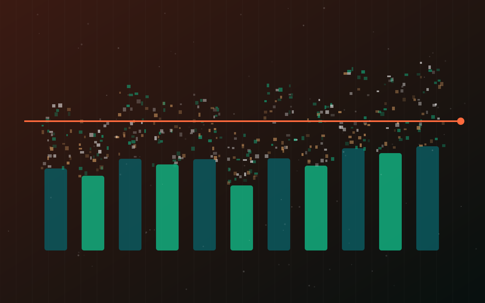
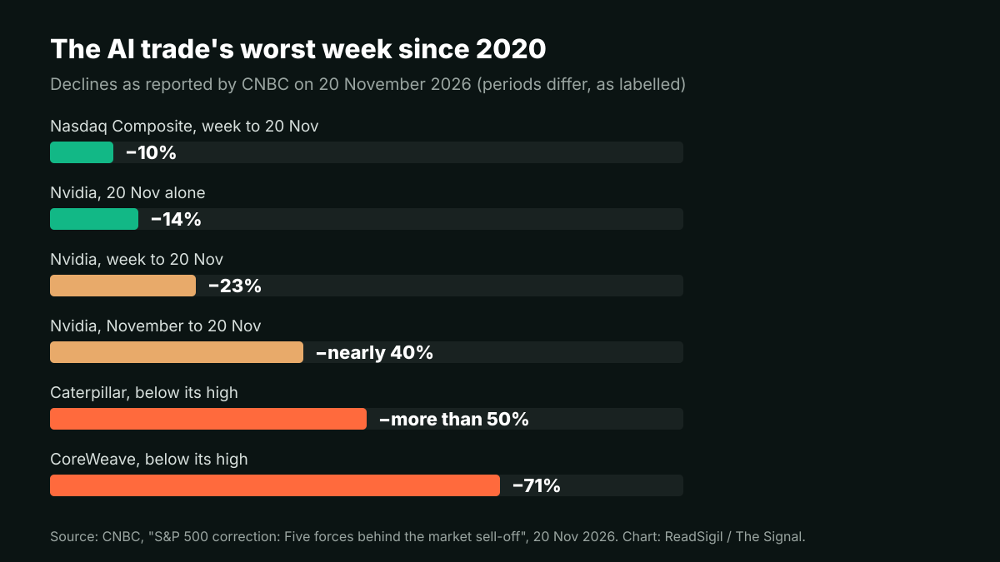

The Signal · Issue 10 · AI in Finance
The AI trade had its worst week since 2020. For lenders, the question is what sits behind AI revenue
The Nasdaq fell 10% in the week Anthropic listed, Nvidia lost 14% in a day after Reuters reported that SEC enforcement staff are examining its accounting, and debt-funded data-centre builder CoreWeave is 71% below its high. Share prices are the visible part. Revenue quality and concentration are the credit questions.

Facts are attributed and linked to their sources. The analysis and opinions are the author's own.
What it is
The S&P 500 and the Dow Jones Industrial Average closed in correction territory on Friday 20 November, more than 10% below their records, CNBC reported. The Nasdaq Composite fell 10% for the week, its worst week since March 2020, and is now down for the year. Anthropic, which listed on Nasdaq on Thursday at $83 a share, traded above $115 before reversing and closed the week at $88.91. CNBC says the listing, the biggest IPO ever, fed fears of a "cash-out moment" for the AI trade.
Nvidia fell 14% on Friday after Reuters reported, citing two people briefed on the matter, that SEC enforcement staff are scrutinising potential accounting issues at the company. The SEC declined to comment, and Reuters could not determine when the inquiry began or exactly what it covers; it notes that investigations are not evidence of wrongdoing and many close without action. Reuters points to two areas of renewed scrutiny. One is a change last year to report geographic revenue by customer headquarters rather than billing address, which removed Singapore from the breakdown even as, the Financial Times reported, Singapore sales rose to almost half of global revenue. The other is concern about "circular" AI financing, in which chipmakers help fund or guarantee customers' purchases and data-centre projects. Nvidia's interim chief executive, Colette Kress, said on its earnings call that it would be "far more selective" about such deals. CNBC puts Nvidia's loss at 23% for the week and nearly 40% for November.

Further down the chain, CNBC notes that CoreWeave, which builds data centres with large amounts of debt, is 71% below its high, and that Caterpillar, which has repositioned itself as an AI play through data-centre construction and generators, is more than 50% below its high.
Why it matters
For banks this is a credit and concentration story more than a stock story. Any lender that has financed data centres, chip purchases or AI infrastructure, or holds such assets as collateral, faces a question that share prices only hint at: how good is the revenue behind the loan? Reuters' point about circular financing is the one to take to credit committee. When a supplier funds or guarantees its customers' purchases, reported revenue can overstate independent demand. For each AI-infrastructure borrower, I would map how much revenue comes from a handful of counterparties and whether a supplier guarantee or vendor financing sits behind any of it.
When a supplier helps pay for its own sales, the revenue line stops being a clean measure of demand.
There is a smaller lesson in CNBC's account too. Once the S&P 500 broke its 200-day moving average, trend-following funds became "automatic sellers". That is many models with similar rules acting together, the herding risk Fed Governor Barr described in Issue 09, in an old and ordinary form. Issue 08 noted that regulators had started stress-testing the AI boom itself. This week gave them a live scenario.
One week is not a trend. Wharton's Jeremy Siegel told CNBC he sees a run-of-the-mill correction that resets expectations after three years of double-digit returns.
What I'd watch
- What the SEC inquiry covers, if Nvidia discloses it.
- Whether the debt of AI-infrastructure companies reprices as sharply as their shares.
- Whether Anthropic's shares hold their $83 IPO price.
Sources
- S&P 500 correction: Five forces behind the market sell-off CNBC, 20 Nov 2026, updated 21 Nov.
- Nvidia's accounting is a focus of US SEC investigation, sources say Reuters, 20 Nov 2026.